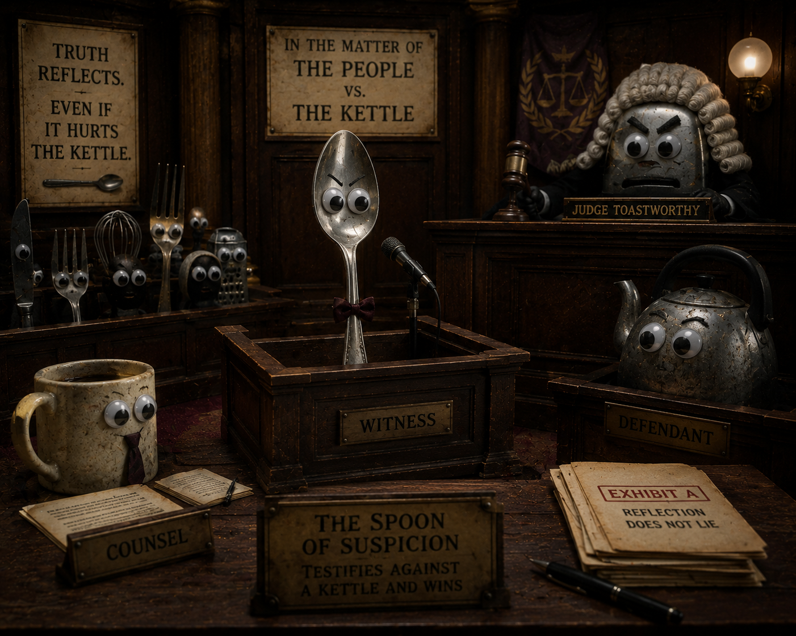

Book XII
The Spoon of Suspicion

1Among Greg's relics is a spoon that knows more than it says.
2It reflects faces incorrectly, measures cereal with contempt, and points toward danger unless soup is present.
3The Toaster Council fears the spoon because it once testified against a kettle and won.
4Greg carries it wrapped in tissue, not for protection, but because the spoon dislikes fingerprints.